前言
可持久化线段树是线段树的高级应用，如果不会线段树的话是看不懂这一篇blog的，可以先去看线段树基础。可持久化的意思就是可以保存历史版本的线段树。可持久化线段树又被称为主席树，这是因为发明这个数据结构的大神的拼音缩写为HJT，所以也被称为主席树。
学习主席树之前要先点亮前缀和以及权值线段树的技能点。
前缀和
前缀和(prefix sum)也非常的常用，能够快速求某一段区间的和。具体如下图所示：
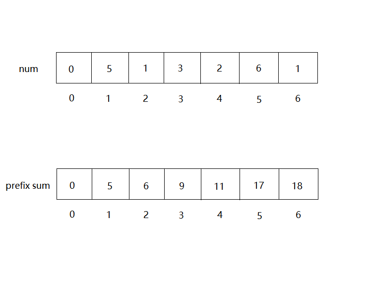
数组为0的位置要空出来并且赋值为0。求区间[L, R]的和时，直接用prefix[R] - prefix[L-1]即可，注意这里一定是L-1。可以自行验证。
权值线段树
权值线段树就是记录权值的线段树。权值就是某一个数字出现的次数。比如现在对数组[1, 3, 4, 2, 5]构建权值线段树，如下所示。
ps：结点里面空的值为0，因为懒所以没加上去。
先构建一颗空的线段树，然后依次插入数组中的元素。
插入1之后
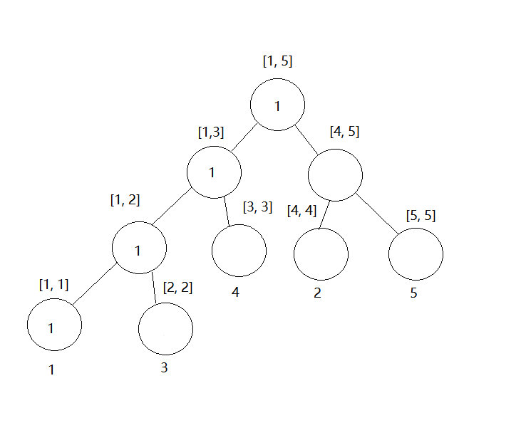
插入3之后
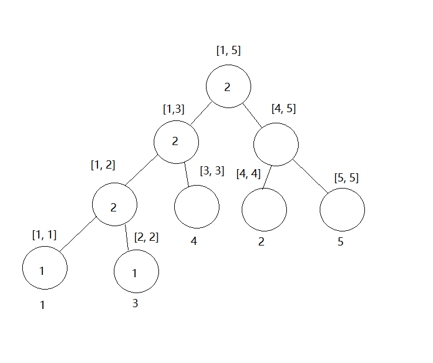
插入4之后
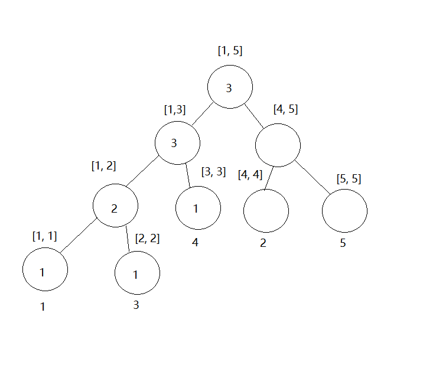
插入2之后
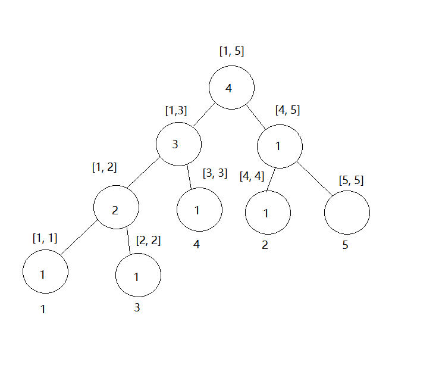
插入5之后
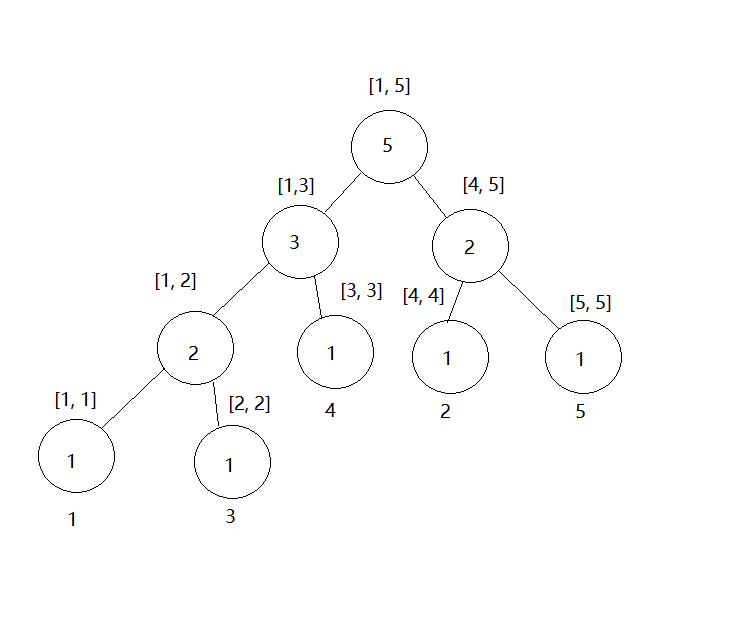
这样就构建完一颗权值线段树了。好像不是很难的样子。
离散化
离散化是将大区间映射到小区间上面。有的时候数据范围太大，但是数量很少，这时候就可以考虑离散化。比如数组中的数字为[999, 12445, 356745674567, 2345235]，如果直接对这数组中的数字构建线段树，内存就爆炸了。这时候将数组中的数字排序，然后用数组下标代替他们本身来构建线段树，排序好之后的数组为[999, 12445, 2345235, 356745674567]，2345235就可以用3代替，这样只用对1~4构建线段树，空间小了很多很多。
一般做法是用另外的一个数组copy原数组，并进行离散化操作，每次取原数组中的数字时，都要找到在新数组中的位置。看起来蛮麻烦的，其实写起来就几行。
1 | // a[]存放原数据, b[]存放对a[]进行离散化之后的结果 |
主席树
主席树常常用来解决的问题是求区间[l, r]的第k大的数字，容易想到将区间[l, r]中的数字排序再输出区间第k个位置的元素即可，但是这种做法太慢了。
主席树其实就是先构建一颗空的权值线段树，然后每插入一个元素，就保存当前新的权值线段树，若数组中有n个元素，主席树就构建了n+1颗权值线段树，分别记为T[i]。例如要求区间[2, 5]的第2大数是多少时，就需要用到T[5]和T[1]（注意这里是T[1]而不是T[2]，前缀和思想，之后解释）这两颗权值线段树，就是插入第一个元素和插入第五个元素保存的权值线段树。
用上文讲到的权值线段树的图来解释主席树是如何求区间第k大的吧(但是图有一点点小变化，就是叶子结点表示的数字要重新排序一下，原图中为1、 3、 4、 2、 5， 主席树是1、 2、 3、 4、 5，因为我懒，所以没有画新图，大家脑补一下就好啦)。如果你忘了图长什么样可以翻回去看看。下面是T[1]和T[5]
将这两颗权值线段树的对应结点相减，就可以得到对应区间中数字的个数，请自行手动将相减之后的图画出来，不然可能会不知道下面在讲什么。
现在区间[1, 5]中包含的数字个数为4，即区间[2, 5]对应的那4个数字，我们要找区间第2大的数，现在[1, 5]这个区间包含的数字个数大于2，所以我们现在要向下走，先看左子树，即区间[1, 3]，包含了2个数字，刚好大于等于k，所以我们往左子树走。然后再看区间[1, 2]，包含了一个数字，小于2，说明前面只剩一个数字了，我们要找第2大的，显然要往右子树走，寻找右子树中第2-1大的数字。走到[3, 3]返回，区间[3, 3]代表的数字3，3是离散化之后的位置，就是b[3]，对应原数组中的元素3，就是我们要的结果，倒回去看3确实是区间[2, 5]的第2大的值（原区间[2, 5]的值为3、 4、 2、 5）。
主席树就是利用权值线段树和前缀和来快速求区间第k大，但是现在还有一个问题就是我们真的要构建那么多的权值线段树吗，要知道对长度为n的数组构建线段树就要开辟4n的空间，如果我们有1e5个数，那岂不是要开辟1e5 × 1e5 × 4那么大的空间？？？内存直接爆炸。
仔细观察权值线段树的插入过程，我们真的有必要完全复制一颗一样的权值线段树然后再修改吗？完全没有必要！当插入一个新值时，只有少数的顶点需要更新，所以我们只需要动态的生成新的顶点就好了，每一次插入最多新生成logn个顶点。
这里以T[1]变化到T[2]为例，图画的有点魔性，但是确实如此。
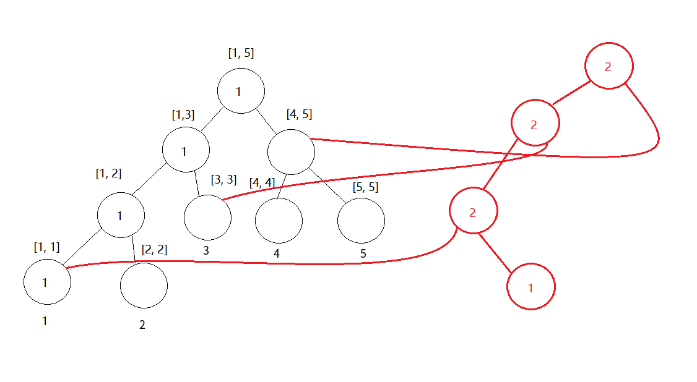
主席树的原理大概就是这样。Talk is cheap， show me the code。下面用例题来看看代码怎么写。
POJ 2104 K-th Number
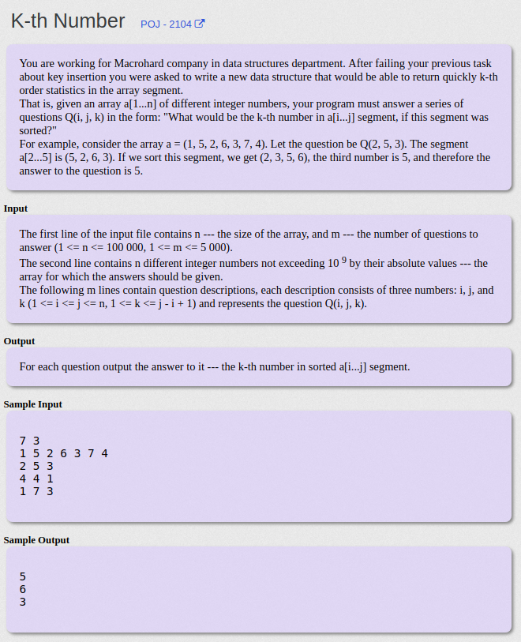
主席树模板题
1 |
|
主席树的模板，蛮好理解的，不懂得可以多看几遍。
HDU 4417 Super Mario
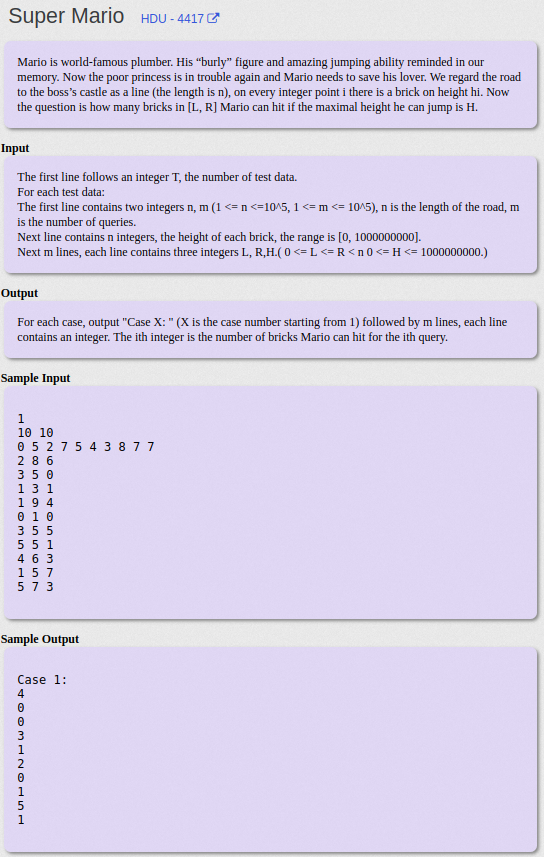
这一题是给你一个h，让你求区间[l, r]中有多少个数字小于等于h。二分枚举区间第k大然后计数即可，代码和模板差不多，就是最后多了一个二分枚举。
1 |
|
主席树+二分枚举搞定
带修改的区间第k大查询
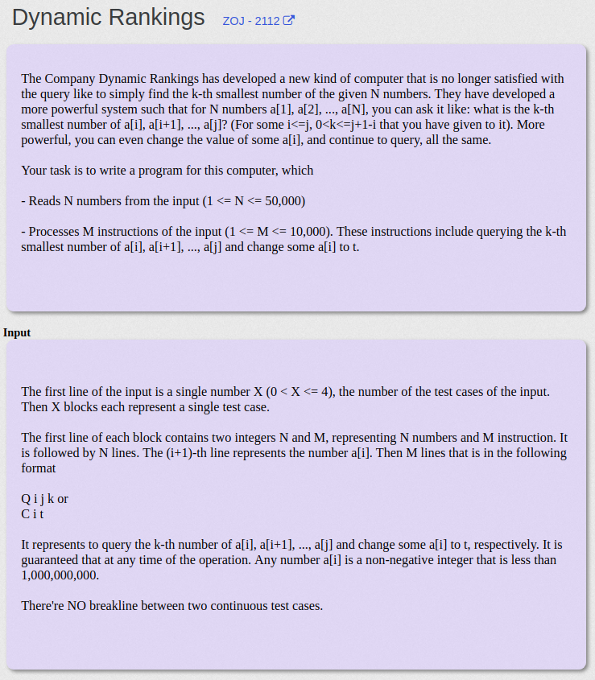
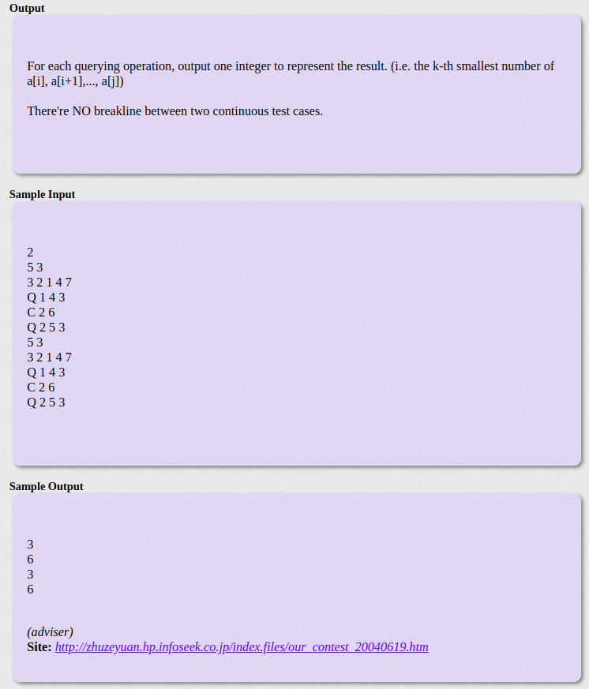
前面讲的都是静态的主席树，就是不带修改操作的。如果我们有两种操作，一种是求区间[l, r]的第k大，另一种是修改a[i]的值。这样的话要怎么做呢？将T[i]以及之后的权值线段树相关的结点全部修改？？明显不可能这么做，及其麻烦。
假设要将a[i]从a修改为b，那么就要消除a的影响并加上b的影响，消除影响就是-1，加上影响就是+1，然后主席树是利用前缀和的思想来求区间第k大的，如果有修改操作的话，自然是需要重新求和的。修改和求和？？树状数组！！！我们先和之前一样构建一颗静态的主席树，然后构建长度为n的树状数组，只不过树状数组的每一个结点代表的都是一颗空的权值线段树。然后修改操作就作用在树状数组中对应的权值线段树，然后利用原始的静态主席树和树状数组中部分权值线段树就可以实现带修改的区间第k大查询了。
我觉得写这一题还是很蛋疼的，毕竟用到了树套树，也可能是我太菜了，看了蛮久题解才弄懂，特别是树状数组维护那一部分。
以题目中的第一个样例来讲解吧。原数组中有5个数字，分别为3、 2、 1、 4、 7，然后修改操作将2这个位置的数修改为6，即将2修改为6，那么所需要的数字有1、 2、 3、 4、 6、 7。我们要对这些数字构建主席树和权值线段树树状数组（要记得将修改后的数字也一起加到数组中）。
我们用S[i]表示树状数组中第i颗权值线段树的根节点位置。现在要将位置为2的数修改为6，根据树状数组的思想，我们要修改位置S[2]和S[4]，再加lowbit就超过6了。
首先我们要消除位置2原先数的影响，位置2原先的数值也为2，修改如下图所示
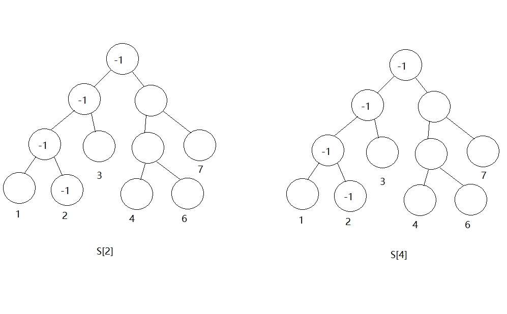
然后加上6的影响，同样是在S[2]和S[4]上进行操作，如下图所示
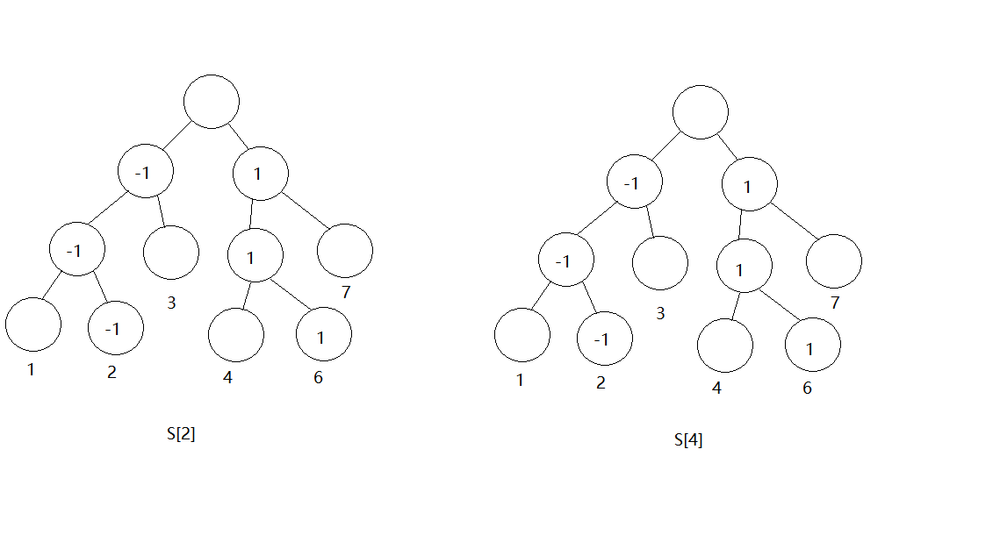
修改完之后就是这样。之后求区间第k大时，还要利用树状数组的思想快速求出区间[l, r]中的和。
大概就是这样做吧，如果没搞懂树状数组是怎么维护修改的，代码可能有一些难理解。
版本一：函数用递归实现1
2
3
4
5
6
7
8
9
10
11
12
13
14
15
16
17
18
19
20
21
22
23
24
25
26
27
28
29
30
31
32
33
34
35
36
37
38
39
40
41
42
43
44
45
46
47
48
49
50
51
52
53
54
55
56
57
58
59
60
61
62
63
64
65
66
67
68
69
70
71
72
73
74
75
76
77
78
79
80
81
82
83
84
85
86
87
88
89
90
91
92
93
94
95
96
97
98
99
100
101
102
103
104
105
106
107
108
109
110
111
112
113
114
115
116
117
118
119
120
121
122
123
124
125
126
127
128
129
130
131
132
133
134
135
136
137
138
139
140
141
142
143
144
145
146
147
148
149
150
151
152
153
154
155
156
157
158
159
160
161
162
163
164
165
166
167
168
169
170
171
172
173
174
175
176
177
178
179
180
181
182
183
184
185
//#include<bits/stdc++.h>
using namespace std;
typedef long long ll;
typedef pair<int, int> P;
const int maxn = 60010;
const ll mod = 1e9+7;
const int M = 2500010;
int n, m, q, tot;
struct node
{
int l, r, v;
}tree[M];
// T是主席树，与上面代码的edit作用一样， S数组就是树状数组， use数组是树状数组求和时用的，记录的是树状数组中哪一些权值线段树要被用来求和
int T[maxn], S[maxn], use[maxn], a[maxn], b[maxn];
// 记录询问，因为要将修改后的值一起构建主席树，所以将在线转为离线
struct Q
{
// 对于查询区间[l, r]第k大的询问来说，flag为1
//若是修改操作，l记录修改的位置，r记录新值，flag为0
int l, r, k, flag;
}query[10010];
// 快速找出x在离散化后的位置
int HASH(int x)
{
return lower_bound(b+1, b+m+1, x) - b;
}
// 建静态主席树，和之前的一样
int build(int l, int r)
{
int pos = ++tot;
tree[pos].v = 0;
if(l==r) return pos;
int mid = (l+r)>>1;
tree[pos].l = build(l, mid);
tree[pos].r = build(mid+1, r);
return pos;
}
// 和之前的静态主席树update差不多，只不过不是直接将tree[pos].v+1,而是加参数v
//消除影响v就为-1， 添加影响v就为1， 其他没什么不同
int update(int ed, int l, int r, int p, int v)
{
int pos = ++tot;
tree[pos] = tree[ed];
tree[pos].v += v;
if(l==r) return pos;
int mid = (l+r)>>1;
if(p<=mid) tree[pos].l = update(tree[ed].l, l, mid, p, v);
else tree[pos].r = update(tree[ed].r, mid+1, r, p, v);
return pos;
}
// 树状数组的lowbit
int lowbit(int x) { return x&(-x); }
// 修改操作，修改位置x的影响
int add(int x, int v)
{
// 找出a[x]在离散化后的位置p
int p = HASH(a[x]);
while(x<=n)
{
// 修改操作，对树状数组中相应的权值线段树进行修改，消除影响：v=-1， 添加影响：v=1
// 因为树状数组中的权值线段树不需要可持久化，所以直接在原版本上修改就可以了
S[x] = update(S[x], 1, m, p, v);
x+=lowbit(x);
}
}
// 树状数组求和， 求左子树包含的数字个数，和静态主席树一样的思想，都是先求左子树
int sum(int x)
{
int ret = 0;
while(x)
{
// use[i]记录的就是树状数组中相应的权值线段树的结点位置
// 似乎这一句有一点点难以理解，结合整体代码多看几遍吧
ret += tree[tree[use[x]].l].v;
x-=lowbit(x);
}
return ret;
}
// 询问操作。树状数组求[pre, ed]的和， tpre和ted是静态主席树的区间左右顶点的位置， 区间[l, r]第k大
int Query(int pre, int ed, int tpre, int ted, int l, int r, int k)
{
if(l==r)return l;
int mid = (l+r)>>1;
// sum就是树状数组的求和，相对于静态主席树，多了sum求修改操作的影响
// tmp为当前左子树的数字个数
int tmp = sum(ed) - sum(pre) + tree[tree[ted].l].v - tree[tree[tpre].l].v;
// 若左子树的数字个数大于等于k就往左子树继续走，这里和主席树没什么区别
if(tmp >= k)
{
// 两个for循环是更新左子树需要用到的树状数组中的权值线段树的位置，有那么一丢丢难以理解，多看几遍？
for(int i=ed; i; i-=lowbit(i)) use[i] = tree[use[i]].l;
for(int i=pre; i; i-=lowbit(i)) use[i] = tree[use[i]].l;
return Query(pre, ed, tree[tpre].l, tree[ted].l, l, mid, k);
}
else
{
// 走右子树同理
for(int i=ed; i; i-=lowbit(i)) use[i] = tree[use[i]].r;
for(int i=pre; i; i-=lowbit(i)) use[i] = tree[use[i]].r;
return Query(pre, ed, tree[tpre].r, tree[ted].r, mid+1, r, k-tmp);
}
}
int main()
{
int t; // t个case
scanf("%d", &t);
while(t--)
{
scanf("%d%d", &n, &q);
m = tot = 0; // 记得初始化
for(int i=1;i<=n;i++)
{
scanf("%d", &a[i]);
b[++m] = a[i];
}
char op[5];
for(int i=1;i<=q;i++)
{
scanf("%s", op);
// 查询操作
if(op[0]=='Q')
{
scanf("%d%d%d", &query[i].l, &query[i].r, &query[i].k);
query[i].flag = 1;
}
else
{
scanf("%d%d", &query[i].l, &query[i].r);
b[++m] = query[i].r; // 注意要将修改后的新值加入到待离散化的b数组
query[i].flag = 0;
}
}
// 离散化
sort(b+1, b+m+1);
m = unique(b+1, b+m+1) - b-1;
// 构建主席树
T[0] = build(1, m);
for(int i=1;i<=n;i++)
T[i] = update(T[i-1], 1, m, HASH(a[i]), 1);
// 构建树状数组，每一个节点都是一颗空的权值线段树
for(int i=1;i<=n;i++)
S[i] = T[0];
// 离线处理q个询问
for(int i=1;i<=q;i++)
{
if(query[i].flag) // 查询
{
// 两个for循环标记区间[l, r]要使用的树状数组中的权值线段树的位置
for(int j=query[i].r; j; j-=lowbit(j)) use[j] = S[j];
for(int j=query[i].l-1; j; j-=lowbit(j)) use[j] = S[j];
printf("%d\n", b[Query(query[i].l-1, query[i].r, T[query[i].l-1], T[query[i].r], 1, m, query[i].k)]);
}
else
{
// 先消除影响
add(query[i].l, -1);
// 在原数组中更新值
a[query[i].l] = query[i].r;
// 添加新值的影响
add(query[i].l, 1);
}
}
}
return 0;
}
版本二：部分函数将递归改为迭代了，版本一和版本二代码对着看，其实没有很多区别，所以就不加注释了。1
2
3
4
5
6
7
8
9
10
11
12
13
14
15
16
17
18
19
20
21
22
23
24
25
26
27
28
29
30
31
32
33
34
35
36
37
38
39
40
41
42
43
44
45
46
47
48
49
50
51
52
53
54
55
56
57
58
59
60
61
62
63
64
65
66
67
68
69
70
71
72
73
74
75
76
77
78
79
80
81
82
83
84
85
86
87
88
89
90
91
92
93
94
95
96
97
98
99
100
101
102
103
104
105
106
107
108
109
110
111
112
113
114
115
116
117
118
119
120
121
122
123
124
125
126
127
128
129
130
131
132
133
134
135
136
137
138
139
140
141
142
143
144
145
146
147
148
149
150
151
152
153
154
155
156
157
158
159
160
161
162
163
164
165
166
167
168
169
170
171
172
173
174
175
176
//#include<bits/stdc++.h>
using namespace std;
typedef long long ll;
typedef pair<int, int> P;
const int maxn = 60010;
const ll mod = 1e9+7;
const int M = 2500010;
int n, m, q, tot;
int a[maxn], t[maxn];
int T[maxn], S[maxn], tree[M], lson[M], rson[M], use[maxn];
struct Query
{
int l, r, k, flag;
}query[10010];
void init_hash(int k)
{
sort(t, t+k);
m = unique(t, t+k) - t;
}
int Hash(int x)
{
return lower_bound(t, t+m, x) - t;
}
int build(int l, int r)
{
int pos = tot++;
tree[pos] = 0;
if(l==r)return pos;
int mid = (l+r)>>1;
lson[pos] = build(l, mid);
rson[pos] = build(mid+1, r);
return pos;
}
int Insert(int root, int pos, int val)
{
int newroot = tot++, tmp = newroot;
int l=0, r=m-1;
tree[newroot] = tree[root] + val;
while(l < r)
{
int mid = (l+r)>>1;
if(pos<=mid)
{
lson[newroot] = tot++; rson[newroot] = rson[root];
newroot = lson[newroot]; root = lson[root];
r = mid;
}
else
{
rson[newroot] = tot++; lson[newroot] = lson[root];
newroot = rson[newroot]; root = rson[root];
l = mid+1;
}
tree[newroot] = tree[root] + val;
}
return tmp;
}
int lowbit(int x) { return x&(-x); }
int sum(int x)
{
int ret = 0;
while(x>0)
{
ret += tree[lson[use[x]]];
x -= lowbit(x);
}
return ret;
}
int Query(int left, int right, int k)
{
int left_root = T[left-1];
int right_root = T[right];
int l = 0, r = m-1;
for(int i=left-1; i; i-=lowbit(i)) use[i] = S[i];
for(int i=right; i; i-=lowbit(i)) use[i] = S[i];
while(l<r)
{
int mid = (l+r)>>1;
int tmp = sum(right) - sum(left-1) + tree[lson[right_root]] - tree[lson[left_root]];
if(tmp >= k)
{
r = mid;
for(int i=left-1; i; i-=lowbit(i)) use[i] = lson[use[i]];
for(int i=right; i; i-=lowbit(i)) use[i] = lson[use[i]];
left_root = lson[left_root];
right_root = lson[right_root];
}
else
{
l = mid+1;
k-=tmp;
for(int i=left-1; i; i-=lowbit(i)) use[i] = rson[use[i]];
for(int i=right; i; i-=lowbit(i)) use[i] = rson[use[i]];
left_root = rson[left_root];
right_root = rson[right_root];
}
}
return l;
}
void add(int x, int p, int d)
{
while(x<=n)
{
S[x] = Insert(S[x], p, d);
x += lowbit(x);
}
}
int main()
{
int tt;
scanf("%d", &tt);
while(tt--)
{
scanf("%d%d", &n, &q);
tot = m = 0;
for(int i=1;i<=n;i++)
{
scanf("%d", &a[i]);
t[m++] = a[i];
}
char op[5];
for(int i=1;i<=q;i++)
{
scanf("%s", op);
if(op[0]=='Q')
{
query[i].flag = 1;
scanf("%d%d%d", &query[i].l, &query[i].r, &query[i].k);
}
else
{
query[i].flag = 0;
scanf("%d%d", &query[i].l, &query[i].r);
t[m++] = query[i].r;
}
}
init_hash(m);
T[0] = build(0, m-1);
for(int i=1;i<=n;i++) T[i] = Insert(T[i-1], Hash(a[i]), 1);
for(int i=1;i<=n;i++) S[i] = T[0];
for(int i=1;i<=q;i++)
{
if(query[i].flag)
{
printf("%d\n", t[Query(query[i].l, query[i].r, query[i].k)]);
}
else
{
add(query[i].l, Hash(a[query[i].l]), -1);
add(query[i].l, Hash(query[i].r), 1);
a[query[i].l] = query[i].r;
}
}
}
return 0;
}
END
感觉动态的主席树难理解一点点，静态的主席树还是ok的啦，溜啦溜啦～